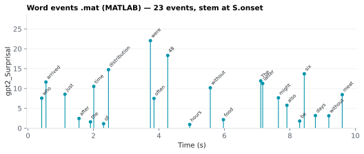

On this page
6.1.16Word events .mat (MATLAB)
One MATLAB file per stimulus, word/<stim>_word_events.mat, with one entry per spoken word: when it starts, when it ends, which word it is, and every numeric word feature the run kept.
6.1.16.1What it is
One MATLAB file per stimulus, word/<stim>_word_events.mat, with one entry
per spoken word: when it starts, when it ends, which word it is, and every
numeric word feature the run kept. It is built for the most common first plot
— a feature stemmed at each word's onset, labelled with the word.
The file stores events, not impulse trains: there is no fixed sampling
grid and no resampling. Whoever builds a regressor puts the events on their
own grid (one line, below). The phoneme-surprisal .mat is the grid-based
file; this one is deliberately not.
Every variable is an n × 1 column vector (one entry per event), so
stem(S.onset, S.gpt2_Surprisal) works as written. Variable names are the CSV
column names, unchanged.
6.1.16.2See it

6.1.16.3In your output
| variable | size | MATLAB class |
|---|---|---|
token | 24 × 1 | cell |
onset | 24 × 1 | double |
offset | 24 × 1 | double |
duration | 24 × 1 | double |
gpt2_Surprisal | 24 × 1 | double |
columns | 37 × 1 | cell |
6.1.16.4MATLAB
S = load('word/LJ002-0321_word_events.mat');
whos('-file', 'word/LJ002-0321_word_events.mat') % variables, sizes, classes
stem(S.onset, S.gpt2_Surprisal); hold on
text(S.onset, S.gpt2_Surprisal, S.token, 'Rotation', 45)
xlabel('Time (s)'); ylabel('gpt2_Surprisal')
6.1.16.5What's in the file
Rows are the word CSV's rows minus punctuation and minus any word without
an aligned Onset/End (so every row has a real onset; a NaN onset would
break stem silently). Row order is the CSV order. Text-only runs (no audio,
so no alignment) write no file.
| Variable | Contents | Type |
|---|---|---|
text |
the transcript text, whitespace-normalised; every token is a substring of it |
char row |
token |
the (spoken) word | cellstr |
onset, offset |
word start and end, seconds from audio start | double |
duration |
offset − onset, seconds |
double |
sentence_id, token_id |
the same-named CSV columns | double |
| one variable per numeric word column the run keeps | the CSV column name, e.g. gpt2_Surprisal, Zipf_Freq, AoA_Mean, Pitch_Mean, Sem_Empath_body; NaN where the CSV cell is empty |
double |
columns |
the names of the feature variables above, in CSV order | cellstr |
units |
the unit of each of those, aligned with columns (empty where none) |
cellstr |
onset, offset, duration, token and text are always present, even if
the CSV drops Onset/End. String columns (lemma, upos,
Sem_Categories, …) are not in the file — the CSV has them. Booleans and 0/1
indicators (Sem_Empath_*, *_TopMatch) are stored as doubles. A missing
feature value is NaN, which stem and text skip, so there is no
is_valid flag.
One row per spoken word
Forced alignment gives one acoustic word where the text parser sees several
tokens (don't is parsed as do + n't; John's as John + 's). The CSV
keeps one row per parsed token, each carrying the same Onset/End. The
.mat merges such a run into one row, so it differs from the CSV on those
words. token is the aligned word; the feature columns combine as follows:
| Column kind | Rule |
|---|---|
*_Surprisal |
sum of the parts |
*_Cloze |
product of the parts |
*_TopMatch |
1 only if every part is 1 |
Sem_* 0/1 indicators |
1 if any part is 1 |
prosody and timing (Pitch_*, Volume_*, Word_Gap, …) |
first part (the parts share one Onset–End window) |
frequency and lexical norms (Zipf_Freq, AoA_*, Concreteness, …) |
looked up again for the joined form with the same lookup the CSV uses; NaN if the joined form is absent |
token_id, sentence_id |
first part |
⚠️ Why these rules: surprisal is a negative log probability, and by the chain rule −log P(do) − log P(n't | do) = −log P(don't), so the parts' surprisals add. The same chain rule makes the parts' cloze probabilities multiply into the probability of the whole word. A word is the top prediction only if all of its parts were. Frequency and norms have no exact way to combine parts, so the joined word is looked up instead of inventing a value. The practical reason for merging at all: two events on one sample would silently overwrite each other in the usual grid assignment.
6.1.16.6MATLAB
Load into a struct. A bare load would put a variable named text in the
workspace and shadow MATLAB's text() function.
S = load('word/<stim>_word_events.mat');
% Stem a feature at each word's onset, labelled with the word
stem(S.onset, S.gpt2_Surprisal); hold on
text(S.onset, S.gpt2_Surprisal, S.token, 'Rotation', 45)
xlabel('time (s)'); ylabel('gpt2 surprisal');
% Put the events on your own sampling grid (fs Hz, N samples)
fs = 128;
N = ceil(max(S.offset) * fs);
x = accumarray(round(S.onset*fs) + 1, S.gpt2_Surprisal, [N 1]);
% What the feature columns are, and their units
[S.columns, S.units]
accumarray adds the values that land on the same sample. The plain
x(idx) = v assignment keeps only the last of several events that share a
sample, which loses events silently. Use S.onset + S.duration/2 or any other
anchor in place of S.onset if you prefer one.
6.1.16.7Configuration
Word features → MATLAB events file card → Events .mat (<stim>_word_events.mat) toggle, off by default; the card's switch
(features.master_word_events, on by default) greys it out. In
config/features.yaml it is features.feat_word_events_mat. It needs forced
alignment, so a run with it on always aligns; it is written only when the Word
level output is on. A syllable counterpart is described in the
syllable events file.
6.1.16.8In the code
Source: sensi/utils/event_mat.py:word_event_vars; written by
sensi/pipeline.py:run_word_level_batch.
What the code does:
- Takes the word frame the run already built, after the per-column drop, so
the same per-column toggles that decide the CSV columns decide the
.matvariables. - Drops punctuation rows and rows with
NaNOnset/End; returns nothing (no file) if no row is left, and the run prints one line saying the file was skipped. - Merges consecutive rows that share
Onset,Endand aligned word into one spoken word, using the rule table above. Every numeric column must have a rule; a test fails on an unmapped one. - Keeps numeric columns only, checks that every variable name is a valid
MATLAB identifier (it raises rather than renaming), and writes with
scipy.io.savemat(..., oned_as="column"). - Fills
unitsfrom the same column-to-unit map the run log uses.
The file is written by the word pass only, never by the document pass, and does not depend on the word CSV itself being written. Alignment is not re-run.
6.1.16.9Library
scipy.io.savemat writes the file; the feature values come from the pandas
frame the run already holds.